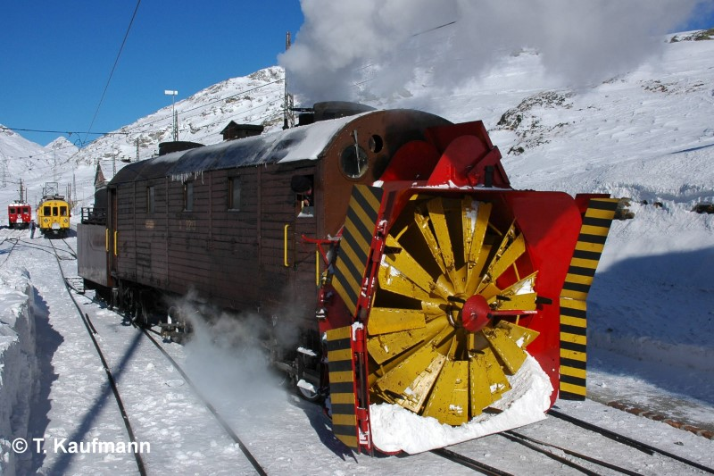
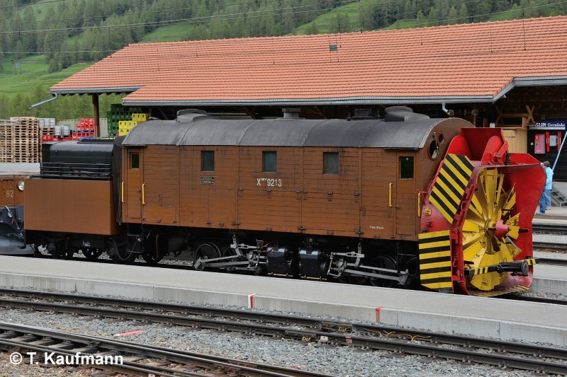
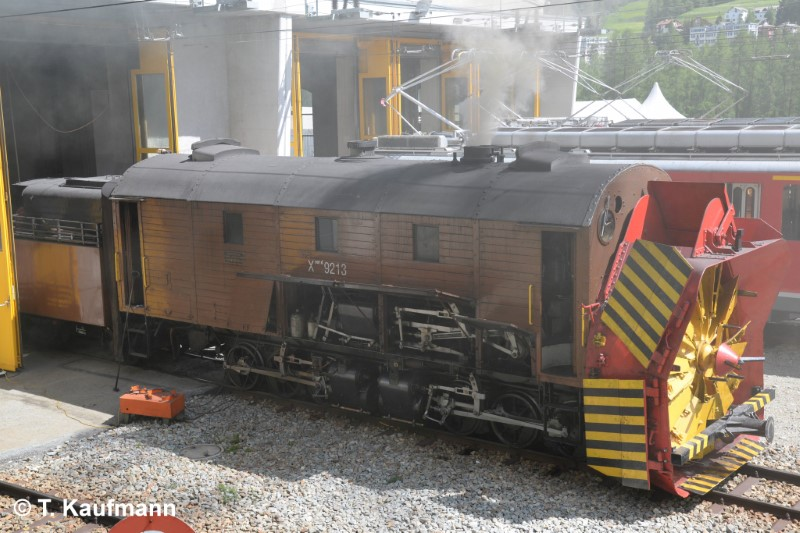

Allgemein
| Baujahr | 1910 |
| Einsatz | BB, (StN) [1] |
| Selbstfahrend | ja (Bahnhofbereich) |
| Antriebstechnik | Heissdampf-Zwillings-Triebwerk |
| Leistung | 580 PS / 428 kW |
| Ergänzungsbremse | Repressionsbremse |
| Achsen | Lok = 6 Tender = 2 |
| Stationiert | Pontresina |
Technische Daten
| Geschwindigkeit | 36 km/h (Reihe A) Schleuderbetrieb: 12 km/h |
| Länge | 13.865 m |
| Gewicht (Tara / Brutto) | 52.5 t / 63.5 t |
| Bremsgewicht | 64 t |
| Feststellbremse | H 24 + 15 t (29 + 18 kN) |
| Wasservorrat | 7.0 m3 |
| Kohlenvorrat | 4.0 t |
| Räumbreite | max. 3.6 m |
| Räumleistung | 6'000 t/h |
Fahrzeugausrüstung
| Vielfachsteuerung | keine |
| Funkfernsteuerung | keine |
| Zugbeeinflussung | keine |
| Drehbar | nein |
| Heizleitung | keine |
| Speiseluft-Leitung | keine |
| Bremssystem | Vakuum-Hauptleitung |
| LBT-Leitung | keine |